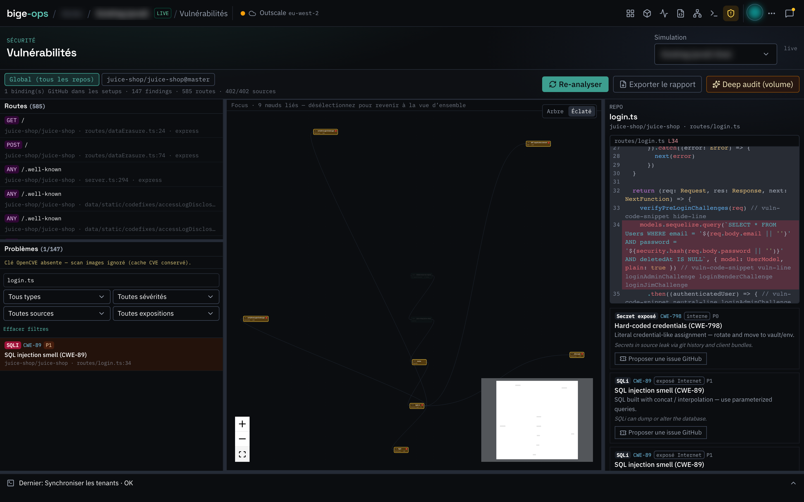
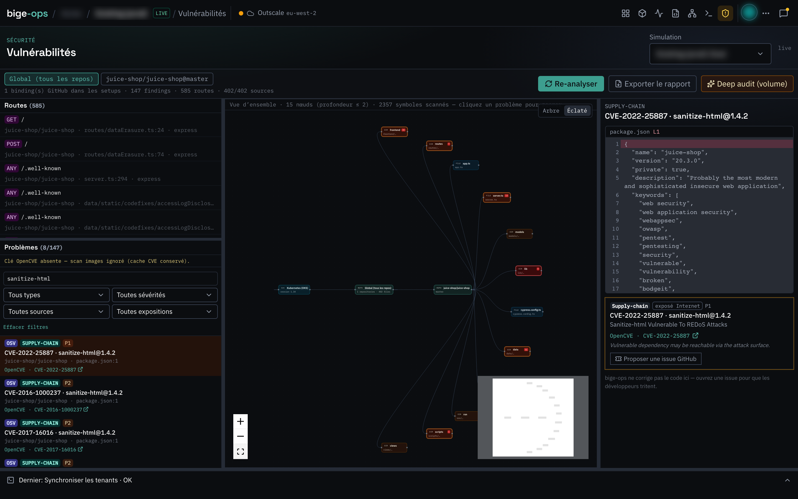

Le simulateur de stack pour Outscale · gratuit · installé en une commande
Simule avant de déployer. Dessine ta stack, teste-la et mesure son coût avant de dépenser quoi que ce soit.
Analyse ce que tu déploies. Coût détaillé, risques sur tes données, CVE de tes dépôts.
Déploie comme sur une plateforme, chez toi. Tu relies ton dépôt, bige-ops déploie sur ton compte : cloud souverain français, régions classiques et SecNumCloud.
Gratuit, installé en une commande. Pas d’abonnement, pas de compte cloud pour commencer : tu installes, tu te connectes avec GitHub, tu simules.
Gratuit. macOS (Apple Silicon) : une commande Homebrew. Linux : AppImage ou paquet .deb. Tu simules tout de suite, sans compte cloud ; tu le connectes quand tu déploies.
Démarrer en 3 étapes
Installe, c’est gratuit : brew install --cask simondelamarre/bige-ops/bige-ops sur macOS, ou l’AppImage / le .deb sur Linux.
Ouvre bige-ops, connecte-toi avec GitHub (tes configurations y sont versionnées), choisis un dossier de travail et pars d’une topologie prête : mono-VM, multi-VM ou Kubernetes (OKS).
Lis le résultat : coût mensuel, risques et vulnérabilités. Tu connectes ton compte cloud seulement quand tu veux déployer.
Pourquoi bige-ops
Tu simules, tu testes, tu déploies — puis tu analyses et tu corriges.
Simule avant de déployer.
bige-ops est un simulateur de stack.
Tu dessines ta stack (VMs, cluster OKS, stockage, réseau), tu vois son coût mensuel et tu la testes avant de dépenser un euro. Quand elle te convient, tu la déploies sur ton compte : Terraform et manifests Kubernetes sont générés pour toi.
Cloud souverain français, régions classiques et SecNumCloud.
Chaque brique du simulateur correspond à un service du cloud (VMs, Kubernetes managé, volumes, Object Storage, load balancer), avec son prix public. Tu planifies, tu appliques et tu suis tes coûts, y compris en SecNumCloud.
Ce n’est pas un Docker sur ton poste : c’est ta prod, sur ton cloud.
Un Docker sur ton poste fait tourner des conteneurs pour toi, en local. bige-ops, lui, pilote ta production : tu relies ton dépôt Git, il génère l’infra et déploie tes services sur des VMs ou un cluster Kubernetes managé de ton compte. Tu gardes la simplicité d’une plateforme managée, avec la main sur ton infra et le prix public de ton cloud. Tes secrets restent chez toi : coffre local, sync optionnelle vers GitHub ou HashiCorp Vault.
bige-ops lit les dépôts de ta stack avec un vrai parseur de code (tree-sitter) et croise avec ce que ta stack expose : dépendances npm et PyPI rapprochées des vulnérabilités connues (OSV), failles courantes dans le code (injections, XSS, secrets, CORS) et routes exposées sans authentification : les trous béants ressortent en quelques minutes. Avec ta clé OpenCVE, les images de ta stack sont confrontées au référentiel CVE d’OpenCVE : tu vois les premières vulnérabilités avant de déployer. Rapport Markdown ou PDF.

Une injection SQL réelle dans OWASP Juice Shop, dépôt public volontairement vulnérable : chacun peut la vérifier.

CVE-2022-25887 sur sanitize-html 1.4.2, avec son lien vers OpenCVE.
Le game changer : l’analyse profonde.
bige-ops advanced, avec ta propre clé LLM.
Un agent d’audit parcourt tes dépôts en profondeur, avec le contexte de ta stack cloud : ce qui est exposé, et par quelles routes. Il remonte des failles classées par CWE, avec une issue GitHub proposée pour chacune. Tu branches ta clé (Anthropic, OpenAI, Google Gemini, Mistral) : les appels partent de ton poste, rien n’est gardé chez nous.
bige-ops est construit pour un cloud souverain français, sur les régions classiques
comme sur SecNumCloud. Chaque brique du simulateur correspond à un service, avec son prix public.
StableVisual et estimation : canvas, € HT/mois, hors ligne
StableSimulations : brouillon et live, promote, snapshots, retour arrière
StableApply et deploy : plan, apply et deploy sur ton compte
StableOKS : nodepools, scale horizontal et vertical, HPA, HTTPS via certificat EIM, logs kubectl
StableTarifs : catalogue public, synchronisé via l’API
StableVulnérabilités : mode direct sans clé (dépendances OSV, failles de code), référentiel OpenCVE pour les images de la stack (clé OpenCVE), rapport MD/PDF
Pas pour commencer : la simulation et l’estimation fonctionnent hors ligne. Ton compte cloud sert pour l’inventaire, le plan et l’apply.
Pourquoi ce cloud ?
bige-ops est conçu pour un cloud souverain français, avec des régions SecNumCloud et Kubernetes managé (OKS). Le simulateur couvre ses services un par un, avec leur prix public. Pourquoi ce choix.
Comment l’installer sur macOS ?
Par Homebrew : la commande ci-dessus installe l’app et la prépare pour le premier lancement. Guide d’installation.
Où sont les secrets ?
Sur ton poste, dans un coffre local. Rien n’est synchronisé vers un service bige-ops. Détail.
L’analyse de vulnérabilités est-elle incluse ?
Oui. Le mode direct (dépendances et code) fonctionne sans aucune clé ; le rapprochement des images avec le référentiel OpenCVE demande ta clé OpenCVE.
Où vont mes clés LLM ?
Elles restent chez toi (Settings), puis partent directement chez le fournisseur choisi. Aucune rétention côté bige-ops. Agent.
Glossaire
Tina
Le nom des types de VM sur mesure, au format tinavW.cXrYpZ : génération de CPU, vCPU, RAM en GiB et niveau de performance (p1 le plus haut). Exemple : tinav6.c4r16p1.
VM
Une machine virtuelle, taillée à la demande par son type Tina, démarrée depuis une OMI, avec un disque racine BSU. L’API historique FCU l’appelle « instance ».
VPS
Virtual Private Server : le terme générique pour un serveur virtuel loué. Ici, c’est une VM, et sa taille se compose librement (vCPU, RAM, performance) au lieu d’être choisie dans une grille fixe.
OMI
Machine Image : l’image qui sert de modèle à une VM (système et configuration). Les OMI officielles sont maintenues par le cloud ; un identifiant d’OMI est propre à une Région.
BSU
Les volumes bloc, attachés à une VM de la même Subregion : standard (Magnetic), gp2 (Performance, SSD) ou io1 (Enterprise, SSD à IOPS provisionnées), avec snapshots.
OOS
Object Storage compatible S3 : buckets régionaux pour fichiers applicatifs, sauvegardes et exports d’OMI ou de snapshots.
Net
Le réseau privé virtuel d’un compte dans une Région, découpé en Subnets, avec route tables, security groups, internet service et NAT service.
LBU
Load Balancer Unit, le load balancer : HTTP/HTTPS ou TCP/SSL, health checks, et terminaison TLS avec un certificat serveur stocké dans EIM.
EIM
Elastic Identity Management : utilisateurs, politiques d’accès et certificats serveur du compte. Un certificat y est référencé par son ORN.
OKS
Kubernetes as a Service : control plane managé, nodepools de VMs Tina, Services de type LoadBalancer adossés au LBU.
SecNumCloud
Le référentiel de sécurité de l’ANSSI. Le cloud est qualifié SecNumCloud 3.2 ; la région correspondante est cloudgouv-eu-west-1.
Mono-VM
La topologie single-vm de bige-ops : une seule VM {nom}-all porte les apps et leurs bases, avec une IP publique. Le point de départ le plus simple.
Multi-VM
La topologie multi-vm : une VM app publique, souvent derrière un LBU, et une VM privée par base de données, dans le même Net.
Simulation
Une variante de ta stack dans bige-ops : brouillon (draft) ou live, avec son coût estimé.
Estimation
Le coût mensuel € HT d’une simulation, calculé sur ton poste à partir du catalogue public, synchronisable par l’API ReadPublicCatalog.
Apply
Créer ou mettre à jour l’infrastructure sur ton compte : Terraform généré pour le Net, les VMs, les volumes, le LBU et OOS, oks-cli pour OKS. Le plan montre les changements avant.
Deploy
Déployer les applications sur l’infrastructure en place : Docker Compose sur les VMs, kubectl apply sur OKS.
Promote
Faire d’une simulation draft la simulation live du compte. L’ancienne live est archivée, après un snapshot de configuration.
Mode expert
L’édition directe des fichiers de la simulation (project.yaml, Terraform, manifests OKS) dans le Workspace de l’app.